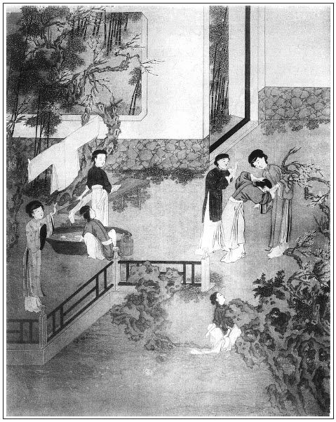

張回夫金蓮之妒瓶兒，以其有子也。今摳打如意，亦是恐其有子，又為瓶兒之續。是作者特為瓶兒餘波，亦如山洞內蕙蓮之鞋也。
上文寫如許諂媚之奸臣，此回接寫金蓮吃溺，真是罵盡世人。
王三官嫖桂姐，與西門爭衡之人也。乃一旦拜為干父，猶貼其母，則西門之暢意為何如？夫天道暢發於夏，即有秋來，況人事哉！此西門將死之兆也。
西門拜太師干子，王三官又拜西門干子，勢力之於人寧有盡止？寫千古英雄同聲一哭，不為此一班市井小人罵也，其意可想。
百忙裡即收轉李銘者，為後嬌兒拐財作地。
此回寫月娘嚴緊門戶，反襯西門死後疏略，真是不堪，無禮之至。
處處以玉樓襯金蓮之妒，固矣。然處處必描玉樓「慢慢地走來」，「花枝般搖戰的定來」，或「低了頭不言語」，「低了頭弄裙帶」，真是寫盡玉樓矣。
寫西門告月娘露機，為翟管家埋怨，卻用月娘幾語，一襯西門疏略，一襯月娘有心也。
寫伯爵，必用十二分筆，描其生動，處處皆然，又不特此回之鵲叫也。
寫安忱來拜，處處在西門飲酒赴約之時。蓋屢屢點醒其花酒叢中，安枕無憂，不知死之將至，正是作者所以用安忱一人入此書之本意也。故安郎中乃唸經時木魚，必隨時敲之，方是用他得著也。
上回月娘掃雪時，諸人已全合攏，卻用玉樓上壽一總，觀其酒令便知。此回安忱送梅花來，春梅將吐氣，諸人將散，又用玉樓生日一總。信乎玉樓為作者寓意之人。蓋高踞百尺樓頭，以罵世人，然而玉樓生日，特接下一回暢寫之，蓋為清明之杏，特特出落而作嫁李公子地也。
四盆花：紅白梅花，為弄一得雙之春梅作照；茉莉者，不利也；辛夷也，新姨也，蓋不利金蓮也。
寫王三官丑絕，總是為假子罵盡也。
詞曰：
掉臂疊肩情態，炎涼冷暖紛紜。張夾歎盡。興來閹豎長兒孫，石女須教有孕。
莫使一朝勢謝，親生不若他生。張夾聲淚俱血。爹爹媽媽向何親？掇轉窟臀不認。張夾放聲一哭。
──右調《勝長天》

話說西門慶與何千戶在路不題。單表吳月娘在家，因西門慶上東京，見家中婦女多，恐惹是非，吩咐平安無事關好大門，後邊儀門夜夜上鎖。張夾二句非寫此日月娘好處，乃寫西門死後，月娘日夜宣卷，以生敬濟金蓮之奸，遠出燒香，丟下許多婦女全然不顧之罪也。蓋此日西門出門，既日日上鎖，恐惹是非，豈後文寡婦守節，乃反不怕是非，遠出不管門戶，便寫得月娘真是第一等可殺的醜婦人。姊妹每都不出來，各自在房做針指。若敬濟要往後樓上尋衣裳，月娘必使春鴻或來安兒跟出跟入。常時查門戶，凡事都嚴緊了。張夾所以為西門死後不嚴，遙映也。這潘金蓮因此不得和敬濟勾搭。張夾尚不致敗露以此。只賴奶子如意備了舌，逐日只和如意兒合氣。
一日，月娘打點出西門慶許多衣服、汗衫、小衣，教如意兒同韓嫂兒漿洗。不想這邊春梅也洗衣裳，使秋菊問他借棒槌。張夾昔日棒槌打搗鬼之時，雪夜琵琶已拚千秋埋恨；今日瓶墜簪折，如意不量，猶欲私棒槌以惹嘲，宜乎受辱。使金蓮將翡翠軒中發源醋意，至此一齊吐出。然後知王六兒打搗鬼，必用棒槌之妙也。這如意兒正與迎春捶衣，不與他，說道：「前日你拿了個棒槌，使著罷了，又來要！繡旁此亦如意多事。趁韓嫂在這裡，要替爹捶褲子和汗衫兒哩。」那秋菊使性子張夾秋菊一個性子。走來對春梅說：「平白教我借，他又不與。迎春倒說拿去，如意兒攔住了不肯。」春梅道：「耶樂，耶樂！怎的這等生分？大白日裡借不出個干燈盞來。借個棒槌使使兒，就不肯與將來，替娘洗了這裹腳，教拿甚麼捶？秋菊，你往後邊問他們借來使使罷。」張夾春梅使秋菊，秋菊才來。這潘金蓮正在房中炕上裹腳，忽然聽得，又因懷著仇恨，尋不著頭由兒，便罵道：「賊淫婦怎的不與？你自家問他要去，不與，罵那淫婦不妨事。」張夾罵申二姐，以此一言中之也。金蓮使春梅。這春梅一衝性子，張夾春梅又一個性子。就一陣風走來李瓶兒那邊，說道：張夾春梅又來。「那個是外人也怎的？棒槌借使使就不與。如今這屋裡又鑽出個當家的來了！」繡眉寫得巧甚，幾令如意無立腳處。張夾一語見血，所謂與金蓮一鼻孔出氣者也。
如意兒道：「耶樂，耶樂！放著棒槌拿去使不是，誰在這裡把住？就怒說起來。大娘吩咐，趁韓媽在這裡，替爹漿出這汗衫子和綿綢褲子來。秋菊來要，我說待我把你爹這衣服捶兩下兒著，就架上許多誑，說不與來？早是迎春姐聽著。」繡眉如意若知局，此時便宜轉口，何更出牴觸之言？蓋乍得主人寵嬌，喜心正盛，未經磨練，不能一時卒平耳。不想潘金蓮隨即跟了來，便罵道：張夾金蓮又來。「你這個老婆不要說嘴！死了你家主子，張夾只此一語。如今這屋裡就是你？張夾又是此一語。你爹身上衣服不著你恁個人兒拴束，誰應的上他那心！俺這些老婆死絕了，教你替他漿洗衣服？你拿這個法兒降伏俺每，我好耐驚耐怕兒！」如意兒道：「五娘怎的說這話？大娘不吩咐，俺們好掉攬替爹整理的？」金蓮道：「賊歪剌骨，雌漢的淫婦，還強說甚麼嘴！半夜替爹遞茶兒扶被兒是誰來？繡旁搶白得毒甚。張夾後吃尿者是誰來？討披襖兒穿是誰來？你背地干的那繭兒，你說我不知道？就偷出肚子來，我也不怕！」繡旁心病。張夾只是此一語，可知葡萄架、翡翠軒千秋之吳越矣。如意道：「正經有孩子還死了哩，俺每到的那些兒！」繡旁挺撞得更毒。張夾怨恨之於人大矣哉！這金蓮不聽便罷，聽了心頭火起，粉面通紅，走向前一把手把老婆頭髮扯住，只用手摳他腹。繡眉瓶兒以有子擅寵，金蓮受累極矣。故今捕風捉影而即摳其腹，可謂曾經蛇咬，夢井索而懼也。讀之噴飯。張夾是醋極處，卻是癡絕處。天下有瓶兒房中雞犬皆能生子者哉！寫妒婦真寫至骨。虧得韓嫂兒向前勸開了。金蓮罵道：「沒廉恥的淫婦，嘲漢的淫婦！俺每這裡還閒的聲喚，張夾忙時亦聲喚。你來雌漢子，你在這屋裡是甚麼人？你就是來旺兒媳婦子從新又出世來了，繡旁又是心病。我也不怕你！」張夾又提出一個，可知蕙蓮為瓶兒前身，如意為瓶兒之後身。此蓋將前後文氣一齊串入，使看者放如箕眼孔，一齊看去，方知作者通身氣脈，不是老婆舌頭而已也。那如意兒一壁哭著，一壁挽頭髮，繡旁畫。說道：「俺每後來，也不知甚麼來旺兒媳婦子，只知在爹家做奶子。」金蓮道：「你做奶子，行你那奶子的事，怎的在屋裡狐假虎威，張夾句句是瓶兒，故妙。成起精兒來？老娘成年拿雁，教你弄鬼兒去了！」
正罵著，只見孟玉樓後邊慢慢的走將來，說道：張夾處處少他不得。「六姐，我請你後邊下棋，你怎的不去，卻在這裡亂些甚麼？」一把手拉到他房裡坐下，說道：「你告我說，因為什麼起來？」張夾總是以閒襯忙。這金蓮消了回氣，春梅遞上茶來，喝了些茶，便道：「你看教這賊淫婦氣的我手也冷了，茶也拿不起來。張夾卻如此寫，妙絕。我在屋裡正描鞋，張夾又找葡萄架後情景。你使小鸞來請我，我說且躺躺兒去。歪在床上也未睡著，只見這小肉兒百忙且捶裙子。我說你就帶著把我的裹腳捶捶出來。半日只聽的亂起來，卻是秋菊問他要棒槌使，他不與，把棒槌匹手奪下了，繡旁添言，妙。張夾妙。說道：『前日拿個去不見了，又來要！如今緊等著與爹捶衣服哩！』教我心裡就惱起來，使了春梅去罵那賊淫婦：『從幾時就這等大膽降服人，俺每手裡教你降伏！你是這屋裡什麼兒？壓折轎竿兒娶你來？張夾卻無老牽頭跟隨。你比來旺兒媳婦子差些兒！』我就隨跟了去，他還嘴裡𥑖裡剝剌的，教我一頓卷罵。繡眉金蓮一口敘七八百言，由淺入深，節上生枝，竟無歇口處，而其中自為起伏，自為頓挫，不緊不慢，不閒不忙，似亂似整，若斷若續，細心玩之，竟是一篇漢人絕妙大文字。不是韓嫂兒死氣力賴在中間拉著我，我把賊沒廉恥雌漢的淫婦口裡肉也掏出他的來！大姐姐也有些不是，張夾直自守靈夜，對月娘說後，已深埋一不快之根，直至後撒潑方吐也。想著他把死的來旺兒賊奴才淫婦慣的有些折兒？教我和他為冤結仇，落後一染膿帶還垛在我身上，張夾舊心事，又是打鐵棍後一恨。說來觸處皆是，所以始終文字如暗絲遞引。說是我弄出那奴才去了。如今這個老婆，又是這般慣他，慣的恁沒張倒置的。你做奶子行奶子的事，許你在跟前花黎胡哨？俺每眼裡是放不下沙子的人。有那沒廉恥的貨，人也不知死的那裡去了，還在那屋裡纏。但往那裡回來，就望著他那影作個揖，口裡一似嚼蛆的，不知說些甚麼。張夾補出恨語，亦是暢語。到晚夕要茶吃，淫婦就連忙起來替他送茶，又替他蓋被兒，兩個就弄將起來。就是個久慣的淫婦！只該丫頭遞茶，許你去撐頭獲腦雌漢子？張夾或亦漢子有撐頭獲腦之物，勞卿照管也。為什麼問他要披襖兒，沒廉恥的便連忙鋪裡拿了綢段來，替他裁披襖兒？你還沒見哩：斷七那日，他爹進屋裡燒紙去，見丫頭、老婆在炕上撾子兒，就不說一聲兒，反說道：『這供養的匾食和酒，也不要收到後邊去，你每吃了罷。』這等縱容著他。這淫婦還說：『爹來不來？俺每好等的。』不想我兩三步扠進去，諕得他眼張失道，就不言語了。張夾又補一事。什麼好老婆？一個賊活人妻淫婦，張夾卿非活人妻乎？特能弄活為死耳。就這等餓眼見瓜皮，不管好歹的都收攬下。原來是一個眼裡火爛桃行貨子。那淫婦的漢子說死了。前日漢子抱著孩子，沒在門首打探兒？還瞞著人搗鬼，張眼溜睛的。你看他如今別模改樣的，又是個李瓶兒出世了！繡眉忽思前，忽慮後，忽恨張，忽怨李，金蓮一腔癡妒，千古如生。張夾必須結到此，此是舊恨。那大姐姐成日在後邊只推聾裝啞的，人但開口，就說不是了。」張夾又結到此，此是後事。那玉樓聽了，只是笑。因說：「你怎知道的這等詳細？」張夾總是反襯。金蓮道：「南京沈萬三，北京枯柳樹。人的名兒，樹的影兒，怎麼不曉得？『雪裡埋死屍──自然消將出來』。」玉樓道：「原說這老婆沒漢子，如何又鑽出漢子來了？」金蓮道：「天下著風兒晴不的，人不著謊兒成不的！他不攛瞞著，你家肯要他！想著一來時，餓答的個臉，黃皮寡瘦的，乞乞縮縮那個腔兒！繡旁揭條得妙。張夾毛青布衫，卿未穿耶？吃了這二年飽飯，就生事兒，雌起漢子來了。張夾卿來西門家幾年矣？你如今不禁下他來，到明日又教他上頭上臉的。一時捅出個孩子，當誰的？」繡旁又說到心病。張夾又結到此，總是點水歸源。一腔心事如畫，方是描神之筆。玉樓笑道：「你這六丫頭，到且是有權屬。」張夾扯淡的妙。說畢，坐了一回，兩個往後邊下棋去了。正是：
三光有影遺誰系？萬事無根只自生。
話休饒舌，有日後晌時分，西門慶來到清河縣。吩咐賁四、王經跟行李先往家去，他便送何千戶到衙門中，看著收拾打掃公廨乾淨住下，方才騎馬來家。進入後廳，吳月娘接著，舀水淨面畢，就令丫鬟院子內放桌兒，滿爐焚香，對天地位下告許願心。月娘便問：「你為什麼許願心？」西門慶道：「休說起，我拾得性命來家。昨日十一月二十三日，剛過黃河，行到沂水縣八角鎮上，遭遇大風，沙石迷目，通行不得。天色又晚，百里不見人，眾人都慌了。況馱垛又多，誠恐鑽出個賊來怎了？比及投到個古寺中，和尚又窮，張夾精已洩盡矣。夜晚連燈火也沒個兒，只吃些豆粥兒就過了一夜。次日風住，方才起身，這場苦比前日更苦十分。前日雖熱，天還好些。這遭又是寒冷天氣，又耽許多驚怕。幸得平地還罷了，若在黃河遭此風浪怎了？我在路上就許了願心，繡眉一陣風便刮得許願，富貴人嬌脆如此。張夾苗天秀何如？到臘月初一日，宰豬羊祭賽天地。」月娘又問：「你頭裡怎不來家，卻往衙門裡做甚麼？」西門慶道：「夏龍溪已升做指揮直駕，不得來了。新升是匠作監何太監侄兒何千戶──名永壽，貼刑，不上二十歲，捏出水兒來的一個小後生，繡旁誇語酷肖。張夾有藍氏在。任事兒不知道。他太監再三央及我，凡事看顧教導他。我不送到衙門裡安頓他個住處，他知道甚麼？他如今一千二百兩銀子──也是我作成他──要了夏龍溪那房子，直待夏家搬取了家小去，他的家眷才搬來。前日夏大人不知什麼人走了風與他，他又使了銀子，央當朝林真人分上，對堂上朱太尉說，情願以指揮職銜再要提刑三年。朱太尉來對老爺說，把老爺難的要不得。若不是翟親家在中間竭力維持，把我撐在空地裡去了。去時親家好不怪我，說我幹事不謹密。不知是什麼人對他說來。」月娘道：「不是我說，你做事有些三慌子火燎腿樣，有不的些事兒，告這個說一場，告那個說一場，繡眉是淺人，亦是好人。張夾月娘說西門，正是反襯自己深心。恰似逞強賣富的。正是有心算無心，不備怎提備？人家悄悄幹的事兒停停妥妥，你還不知道哩！」西門慶又說：「夏大人臨來，再三央我早晚看顧看顧他家裡，容日你買分禮兒走走去。」月娘道：「他娘子出月初二日生日，就一事兒去罷。你今後把這狂樣來改了。常言道：『逢人且說三分清，未可全拋一片心。』老婆還有個裡外心兒，繡旁真。張夾說金蓮，亦是自道。休說世人。」繡眉情從何生？一往而深。
正說著，只見玳安來說：「賁四問爹，要往夏大人家說去不去？」西門慶道：「你教他吃了飯去。」玳安應諾去了。李嬌兒、孟玉樓、孫雪娥、潘金蓮、大姐都來參見道萬福，問話兒，陪坐的。西門慶又想起前番往東京回來，還有李瓶兒在，一面走到他房內，與他靈床作揖，因落了幾點眼淚。張夾文情迴繞飛舞。如意兒、迎春、繡春都向前磕頭。張夾必須點到。月娘隨即使小玉請在後邊，擺飯吃了，一面吩咐拿出四兩銀子，賞跟隨小馬兒上的人，拿帖兒回謝周守備去了。又叫來興兒宰了半口豬、半腔羊、四十斤白面、一包白米、一罈酒、兩腿火熏、兩隻鵝、十隻雞，又並許多油鹽醬醋之類，與何千戶送下程。又叫了一名廚役在那裡答應。
正在廳上打點，忽琴童兒進來說道：「溫師父和應二爹來望。」西門慶連忙請進溫秀才、伯爵來。二人連連作揖，道其風霜辛苦。西門慶亦道：「蒙二公早晚看家。」伯爵道：「我早起來時，忽聽房上喜鵲喳喳的叫。繡眉大老官來家，幫閒便有生意，喜鵲安得不叫？俺房下就先說：張夾房上喜鵲，房下說話，一笑。『只怕大官人來家了，張夾真有此事，非假說也。二哥許久不見，相見風味如故。你還不快走了瞧瞧去？』我便說：『哥從十二日起身，到今還未上半個月，怎能來得快？』房下說：張夾又是房下說。『來不來，你看看去！』教我穿衣裳到宅裡，不想哥真個來家了。恭喜恭喜！」因見許多下飯酒米裝在廳台上，便問道：「送誰家的？」西門慶道：「新同僚何大人，一路同來，家小還未到。今在衙門中權住，送份下程與他。又發柬明日請他吃接風酒，再沒人，請二位與吳大舅奉陪。」伯爵道：「又一件：吳大舅與哥是官，溫老先生戴著方巾，我一個小帽兒怎陪得他坐！不知把我當甚麼人兒看，我惹他不笑話？」張夾許久未寫伯爵，故放手一寫，恐甚冷淡也。西門慶笑道：「這等把我買的緞子忠靖巾借與你戴著，等他問你，只說是我的大兒子，好不好？」張夾又是暗度下文。西門無子，敬濟帶孝，又是暗映孝哥也。說畢，眾人笑了。伯爵道：「說正經話，我頭八寸三，又戴不得你的。」溫秀才道：「學生也是八寸三分，倒將學生方巾與老翁戴戴何如？」西門慶道：「老先生不要借與他，他到明日借慣了，往禮部當官身去，又來纏你。」溫秀才笑道：「老先生好說，連我也扯下水去了。」張夾少刻，畫童又有扯之者。少頃，拿上茶來吃了。溫秀才問：「夏公已是京任，不來了？」繡眉恍惚一問，前後之情俱透，不細，心定作閒話讀過。張夾總是暗描灰線。西門慶道：「他已做堂尊了，直掌鹵簿，穿麟服，使籐棍，如此華任，又來做甚麼！」須臾，看寫了帖子，抬下程出門，教玳安送去了。西門慶就拉溫秀才、伯爵到廂房內暖炕上坐去了。又使琴童往院裡叫吳惠、鄭春、鄭奉、左順四名小優兒明日早來伺候。
不一時，放桌兒陪二人吃酒。西門慶吩咐：「再取雙鍾箸兒，請你姐夫來坐坐。」良久，陳敬濟走來，作揖，打橫坐下。四人圍爐把酒來斟，因說起一路上受驚的話。伯爵道：「哥，你的心好，一福能壓百禍，就有小人，一時自然都消散了。」溫秀才道：「善人為邦百年，亦可以勝殘去殺。休道老先生為王事驅馳，上天也不肯有傷善類。」繡眉才提刑二三年，奈何。想亦孔子說錯，非秀才錯引也。西門慶因問：「家中沒甚事？」敬濟道：「家中無事。只是工部安老爹那裡差人來問了兩遭，昨日還來問，我回說還沒來家哩。」正說著，忽有平安來報：「衙門令史和眾節級來稟事。」西門慶即到廳上站立，張夾如畫。令他進見。二人跪下：「請問老爹幾時上任？官司公用銀兩動支多少？」西門慶道：「你們只照舊時整理就是了。」令史道：「去年只老爹一位到任，如今老爹轉正，何老爹新到任，兩事並舉，比舊不同。」西門慶道：「既是如此，添十兩銀子與他就是了。」二人應喏下去。西門慶又叫回來吩咐：「上任日期，你還問何老爹擇幾時。」二人道：「何老爹擇定二十六日。」西門慶道：「既如此，你每伺候就是了。」二人去了。就是喬大人來拜望道喜。西門慶留坐不肯，喫茶起身去了。西門慶進來，陪二人飲至掌燈方散。西門慶往月娘房裡歇了一宿。
到次日，家中置酒，與何千戶接風。文嫂又早打聽得西門慶來家，對王三官說了，具個柬帖兒來請。張夾緊接。西門慶這裡買了一副豕蹄、兩尾鮮魚、兩隻燒鴨、一壇南酒，差玳安送去，與太太補生日之禮。張夾又緊接，文字千里合筍。如此之妙，方知前招宜府內，寫出一生日非無故也。他那裡賞了玳安三錢銀子，不在話下。正廳上設下酒，錦屏耀目，桌椅鮮明。吳大舅、應伯爵、溫秀才都來的早，西門慶陪坐喫茶，使人邀請何千戶。不一時，小優兒上來磕頭。伯爵便問：「哥，今日怎的不叫李銘？」張夾先問一句，下文入李銘無跡。西門慶道：「他不來我家來，我沒的請他去！」繡旁惱語，酷肖。正說話，只見平安忙拿帖兒稟說：「帥府周爺來拜，下馬了。」吳大舅、溫秀才、應伯爵都躲在西廂房內。西門慶冠帶出來，迎至廳上，敘禮畢，道及轉升恭喜之事。西門慶又謝他人馬。於是分賓主而坐。周守備問京中見朝之事，西門慶一一說了。周守備道：「龍溪不來，一定差人來取家小上京去。」西門慶道：「就取也待出月。如今何長官且在衙門權住著哩。夏公的房子與了他住，也是我替他主張的。」守備道：「這等更妙。」因見堂中擺設桌席，問道：「今日所延甚客？」西門慶道：「聊具一酌，與何大人接風。同僚之間，不好意思。」二人吃了茶，周守備起身，說道：「容日合衛列位，與二公奉賀。」西門慶道：「豈敢動勞，多承先施。」作揖出門，上馬而去。張夾百忙為周守備一熱，又是春梅消息。西門慶回來，脫了衣服，又陪三人在書房中擺飯。何千戶到午後方來，吳大舅等各相見敘禮畢，各敘寒溫。茶湯換罷，各寬衣服。何千戶見西門慶家道相稱，酒筵齊整。四個小優銀箏象板，玉阮琵琶，遞酒上坐。直飲至起更時分，何千戶方起身往衙門中去了。吳大舅、應伯爵、溫秀才也辭回去了。
西門慶打發小優兒出門，吩咐收了傢伙，就往前邊金蓮房中來。張夾一語引入。婦人在房內濃施朱粉，復整新妝，薰香澡牝，正盼西門慶進他房來，滿面笑容，向前替他脫衣解帶，連忙叫春梅點茶與他吃了，打發上床歇宿。端的被窩中相挨素體，枕席上緊貼酥胸，婦人雲雨之際，百媚俱生。西門慶抽拽之後，靈犀已透，睡不著，枕上把離言深講。交接後，淫情未足，又從下替他品簫。這婦人只要拴西門慶之心，又況拋離了半月在家，久曠幽懷，淫情似火，得到身，恨不得鑽入他腹中。將那話品弄了一夜，再不離口。張夾美哉！佳品。西門慶要下床溺尿，婦人還不放，說道：「我的親親，你有多少尿，溺在奴口裡，替你嚥了罷，省的冷呵呵的，熱身子下去凍著，倒值了多的。」繡眉糞且有嘗之者，況尿乎？吾以此為金蓮解嘲，可乎？張夾蓋為了上文無數逢迎一罵。西門慶聽了，越發歡喜無已，叫道：「乖乖兒，誰似你這般疼我！」於是真個溺在婦人口內。婦人用口接著，慢慢一口一口都嚥了。張夾難為一口一口尿出。西門慶問道：「好吃不好吃？」繡旁妙問。張夾娓娓如畫。金蓮道：「略有些鹹味兒。繡旁妙答。張夾娓娓如畫。你有香茶與我些壓壓。」西門慶道：「香茶在我白綾襖內，你自家拿。」這婦人向床頭拉過他袖子來，掏摸了幾個放在口內，才罷。正是：
侍臣不及相如渴，特賜金莖露一杯。
看官聽說：大抵妾婦之道，張夾道出主意。鼓惑其夫，無所不至，雖屈身忍辱，殆不為恥。若夫正室之妻，光明正大，豈肯為也！是夜，西門慶與婦人盤桓無度。
次早往衙門中與何千戶上任，吃公宴酒，兩院樂工動樂承應。午後才回家，排軍隨即抬了桌席來。王三官那裡又差人早來邀請。張夾凡三四遍摹寫。西門慶才收拾出來，左右來報：「工部安老爹來拜。」張夾出門時必用一人來作映，是前後大章法。總是襯疊熱鬧花樣，恐閒閒寫出襯不起也。慌的西門慶整衣出來迎接。安郎中食寺丞的俸，系金鑲帶，穿白鷴補子，跟著許多官吏，滿面笑容，相攜到廳敘禮，彼此道及恭賀，分賓主坐下。安郎中道：「學生差人來問幾次，說四泉還未回。」西門慶道：「正是。京中要等見朝引奏，才起身回來。」須臾，茶湯吃罷，安郎中方說：「學生敬來有一事不當奉瀆：今有九江太府蔡少塘，乃是蔡老先生第九公子，來上京朝覲，前日有書來，早晚便到。學生與宋松泉、錢龍野、黃泰宇四人作東，欲借府上設席請他，未知允否？」張夾來謁者無非借地請客，所為酒肉朋友。西門慶道：「老先生尊命，豈敢有違。約定幾時？」安郎中道：「在二十七日。明日學生送分子過來，煩盛使一辦，足見厚愛矣。」說畢，又上了一道茶，作辭，起身上馬，喝道而去。
西門慶即出門，往王招宣府中來赴席。到門首，先投了拜帖。王三官連忙出來迎接，至廳上敘禮。大廳正面欽賜牌額，金字題曰「世忠堂」，兩邊門對寫著「喬木風霜古，山河𥕧礪新」。張夾前後兩聯，寫得世家可歎。王三官與西門慶行畢禮，尊西門慶上坐，他便傍設一椅相陪。須臾拿上茶來，交手遞了茶，左右收了去。彼此扳了些說話，然後安排酒筵遞酒。原來王三官叫了兩名小優兒彈唱。西門慶道：「請出老太太拜見拜見。」張夾可笑。慌的王三官令左右後邊說。張夾可笑。少頃，出來說道：「請老爹後邊見罷。」王三官讓西門慶進內。張夾可笑。西門慶道：「賢契，你先導引。」張夾寫西門權詐。於是逕入中堂。林氏又早戴著滿頭珠翠，身穿大紅通袖袍兒，腰繫金鑲碧玉帶，下著玄錦百花裙，搽抹的如銀人也一般。西門慶一面施禮：「請太太轉上。」林氏道：「大人是客，請轉上。」讓了半日，兩個人平磕頭，林氏道：「小兒不識好歹，前日沖瀆大人。蒙大人又處斷了那些人，知感不盡。今日備了一杯水酒，請大人過來，老身磕個頭兒謝謝。如何又蒙大人賜將禮來？使我老身卻之不恭，受之有愧。」西門慶道：「豈敢。學生因為公事往東京去了，誤了與老太太拜壽。些須薄禮，胡亂送與老太太賞人。」因見文嫂兒在旁，便道：「老文，你取副盞兒來，等我與太太遞一杯壽酒。」繡旁顧盼處，鬚眉俱動。張夾情事各有飛動處。一面呼玳安上來。原來西門慶氈包內，預備著一套遍地金時樣衣服，放在盤內獻上。林氏一見，金彩奪目，滿心歡喜。文嫂隨即捧上金盞銀台。王三官便要叫小優拿樂器進來彈唱。繡旁三官呆甚。張夾為世家不肖子弟，放聲一哭其祖父也。林氏道：「你叫他進來做甚麼？在外答應罷了。」當下，西門慶把盞畢，林氏也回奉了一盞與西門慶謝了。然後王三官與西門慶遞酒，西門慶才待還下禮去，林氏便道：「大人請起，受他一禮兒。」西門慶道：「不敢，豈有此禮？」林氏道：「好大人，怎這般說！你恁大職級，做不起他個父親！張夾二句為假子做註腳。小兒自幼失學，不曾跟著好人。若是大人肯垂愛，凡事指教他為個好人，今日我跟前，就教他拜大人做了義父。繡眉竟明賣其子。婦人一邪，何所不至？可畏哉！張夾這一個假子與蔡太師假子不同，以其母論之固假中有真矣。但有不是處，一任大人教誨，老身並不護短。」西門慶道：「老太太雖故說得是，張夾竟應承喜極矣。但令郎賢契，賦性也聰明，張夾也字妙。如今年少，為小試行道之端，往後自然心地開闊，改過遷善。老太太倒不必介意。」繡眉全不推辭，只模模糊糊答應，寫出一時心喜口澀，倉卒措詞不來光景，妙甚。張夾謙處，純是應承，妙絕。喜出望外。當下教西門慶轉上，王三官把盞，遞了三鍾酒，受其四拜之禮。遞畢，西門慶亦轉下與林氏作揖謝禮，林氏笑吟吟還了萬福。自此以後，王三官見著西門慶以父稱之。
正是：
常將壓善欺良意，權作尤雲殢雨心。
復有詩以歎之：
從來男女不通酬，賣俏營奸真可羞。
三官不解其中意，饒貼親娘還磕頭。
遞畢酒，林氏吩咐王三官：「請大人前邊坐，寬衣服。」玳安拿忠靖巾來換了。不一時，安席坐下。小優彈唱起來，廚役上來割道，玳安拿賞賜伺候。當下食割五道，歌吟二套，秉燭上來，西門慶起身告辭。王三官再三款留，又邀到他書院中。獨獨的三間小軒裡面，花竹掩映，文物瀟灑。正面懸著一個金粉箋扁，曰「三泉詩舫」，四壁掛四軸古畫。西門慶便問：「三泉是何人？」王三官只顧隱避，不敢回答。繡旁純用白描。半日才說：「是兒子的賤號。」張夾又映入下文月兒在內。西門慶便一聲兒沒言語。抬過高壺來，又投壺飲酒。四個小優兒在旁彈唱。林氏後邊只顧打發添換菜蔬果碟兒上來。張夾又照管林氏。吃到二更時分，西門慶已帶半酣，方才起身，賞了小優兒並廚役，作辭回家。
到家逕往金蓮房中。原來婦人還沒睡，才摘去冠兒，挽著雲髻，淡妝濃抹，正在房內茶烹玉蕊，香裊金猊等待。見西門慶進來，歡喜無限。忙向前接了衣裳，叫春梅點了一盞雀舌芽茶與西門慶吃。西門慶吃了，然後春梅脫靴解帶，張夾以春梅起。打發上床。婦人在燈下摘去首飾，換了睡鞋，上床並頭交股而寢。西門慶將一隻胳膊與婦人枕著，張夾春雲初吐。摟在懷中，猶如軟玉溫香一般，兩個酥胸相貼，臉兒廝搵，鳴咂其舌。不一時，甜唾融心，靈犀春透。婦人不住手下邊捏弄他那話。西門慶因問道：「我的兒，我不在家，你想我不想？」婦人道：「你去了這半個來月，奴那刻兒放下心來！晚間夜又長，獨自一個偏睡不著。隨問怎的暖床暖鋪，只是害冷。繡旁非真相思人，不知此語之妙。繡眉只說言冷，而一種相思可憐處，傷心酸鼻。腿兒觸冷伸不開，只得忍酸兒縮著，白盼不到，枕邊眼淚不知流了多少。張夾為西門慶耶，兼為敬濟耶。落後春梅小肉兒見我短歎長吁，晚間逗著我下棋，坐到起更時分，俺娘兒兩個一炕兒通廝腳兒睡。張夾為得雙一回露線。我的哥哥，奴心便是如此，不知你的心兒如何？」張夾雙寫得到。西門慶道：「怪油嘴，這一家雖是有他們，誰不知我在你身上偏多。」繡旁是真。張夾是瓶兒死後語。婦人道：「罷麼，你還哄我哩！你那吃著碗裡看著鍋裡的心兒，你說我不知道？想著你和來旺兒媳婦子蜜調油也似的，把我來就不理了。張夾一敘卻是瓶兒前影。落後李瓶兒生了孩子，見我如同烏眼雞一般。今日都往那裡去了？止是奴老實的還在。繡眉每讀至此，令人笑不自制。你就是那風裡楊花，滾上滾下，張夾又一敘，方是正文。如今又興起如意兒賊歪剌骨來了。他隨問怎的，只是奶子，見放著他漢子，是個活人妻。不爭你要了他，到明日又教漢子好在門首放羊兒剌剌。你為官為宦，傳出去好聽？你看這賊淫婦，前日你去了，同春梅兩個為一個棒槌，和我大嚷大鬧，通不讓我一句兒。」張夾又一敘，是瓶兒後影。此以上大筆寫金蓮一段心事，為之一總也。又是明將三人文字一總。見所寫三人，原一意貫通，故於摳打處，金蓮口中一敘。至此又用金蓮一總，令看官一氣看去，勿分作三人看也。又金、梅在一處，生死不離，瓶兒、蕙蓮、如意斷斷續續在一二段內寫，又是一部大章法。西門慶道：「罷麼，我的兒，他隨問怎的，只是個手下人。他那裡有七個頭八個膽敢頂撞你？你高高手兒他過去了，低低手兒他敢過不去。」繡眉西門慶亦善調停。婦人道：「耶樂，說的倒好聽！張夾妙絕。沒了李瓶兒，他就頂了窩兒。張夾緊接法脈。學你對他說：『你若伏侍的好，我把娘這分家當就與你罷。』你真個有這個話來？」張夾寫出貪心，與月娘一樣，所以起皮襖之爭也。西門慶道：「你休胡猜疑，我那裡有此話！你寬恕他，我教他明日與你磕頭陪不是罷。」婦人道：「我也不要他陪不是，我也不許你到那屋裡睡。」西門慶道：「我在那邊睡，非為別的，因越不過李大姐情，在那邊守守靈兒，誰和他有私鹽私醋！」婦人道：「我不信你這摭溜子。人也死了一百日來，還守什麼靈？在那屋裡也不是守靈，屬米倉的，上半夜搖鈴，下半夜丫頭聽的好梆聲。」幾句說的西門慶急了，摟過脖子來親了個嘴，說道：張夾一句收住。「怪小淫婦兒，有這些張致的！」於是令他吊過身子去，張夾可知適才是對面說話。隔山討火，那話自後插入牝中，接抱其股，竭力搧磞的連聲響亮。張夾「竭力」二字，癡絕。拿誰顧工錢為之竭力耶？一面令婦人呼叫大東大西，問道：「你怕我不怕？再敢管著！」張夾與葡萄架一樣章法，方見如意與瓶兒一鼻出氣。婦人道：「怪奴才，不管著你好上天也！我曉的你也丟不開這淫婦，到明日，問了我方許你那邊去。他若問你要東西，須對我說，張夾又對瓶兒，初時西門過牆數語。只不許你悄悄偷與他。若不依，我打聽出來，看我嚷不嚷！我就擯兌了這淫婦，也不差甚麼兒。又相李瓶兒來頭，教你哄了，險些不把我打到贅字號去。繡眉出語諧甚，任愁時亦破愁為喜。張夾語語至此結穴。總是一次蕙蓮，再一次瓶兒，所為千年怕麻繩也。你這『爛桃行貨子豆芽萊──有甚正條捆兒』也怎的？老娘如今也賊了些兒了。」繡旁映前老實。張夾文字快甚。說的西門慶笑了。當下兩個殢雨尤雲，纏到三更方歇。正是：
帶雨籠煙世所稀，妖嬈身勢似難支。
終宵故把芳心訴，留得東風不放歸。
兩個並頭交股睡到天明，婦人淫情未足，便不住手捏弄那話，登時把麈柄捏弄起來，叫道：「親達達，我一心要你身上睡睡。」張夾絕妙好床。一面爬伏在西門慶身上倒澆燭，接著他脖子只顧揉搓，張夾一語寫盡。教西門慶兩手扳住他腰，張夾「教」字妙。扳的緊緊的，張夾此句乃金蓮說也。他便在上極力抽提，一面爬伏在他身上揉一回，那話漸沒至根，餘者被托子所阻，不能入。張夾如此出白綾帶。婦人便道：「我的達達，等我白日裡替你作一條白綾帶子，你把和尚與你的那末子藥裝些在裡面，我再墜上兩根長帶兒。等睡時，你扎他在根子上，卻拿這兩根帶扎拴後邊腰裡，拴的緊緊的，又柔軟，又得全放進，張夾所謂不肯留一分餘地也。卻不強如這托子硬硬的，格的人疼？」繡眉此等處若令溫秀才見之，當贊云：工欲善其事，必先利其器矣。西門慶道：「我的兒，你做下，藥在磁盒兒內，你自家裝上就是了。」婦人道：「你黑夜好歹來，咱兩個試試看好不好？」張夾又為後壬子日相約對針。於是，兩個玩耍一番。
只見玳安拿帖兒進來，問春梅：「爹起身不曾？安老爹差人送分資來了。又抬了兩罈酒、四盆花樹進來。」春梅道：張夾以春梅結，與打貓呂簫一回對針。「爹還沒起身，教他等等兒。」玳安道：「他好少近路兒，還要趕新河口閘上回話哩。」不想西門慶在房中聽見，隔窗叫玳安問了話，拿帖兒進去，拆開看，上寫道：
奉去分資四封，共八兩。惟少塘桌席，餘者散酌而已。仰冀從者留神，足見厚愛之至。外具時花四盆，以供清玩；浙酒二樽，少助待客之需。希莞納，幸甚。
西門慶看了，一面起身，且不梳頭，戴著氈巾，穿著絨氅衣走出廳上，令安老爹人進見。遞上分資。西門慶見四盆花草：一盆紅梅、一盆白梅、張夾所謂紅梅花對白梅花也，春梅於此處一提，西門將死矣。又弄一得雙不云「春梅臉上一紅一白」此處已為一照。一盆茉莉、張夾言不利於西門也。一盆辛夷，張夾言春梅即日為周家新姨矣。兩壇南酒，滿心歡喜。連忙收了。發了回帖，賞了來人五錢銀子，因問：「老爹們明日多咱時分來？用戲子不用？」來人道：「都早來。戲子用海鹽的。」說畢，打發去了。西門慶叫左右把花草抬放藏春塢書房中擺放，一面使玳安叫戲子去，一面兌銀子與來安兒買辦。那日又是孟玉樓上壽，張夾掃雪以後玉樓上壽起，此又玉樓上壽。玉樓兩終始一部之人，信乎為作者自喻。院中叫小優兒晚夕彈唱。
按下一頭。卻說應伯爵在家，拿了五個箋帖，教應保捧著盒兒，往西門慶對過房子內央溫秀才寫請書。要請西門慶五位夫人，二十八日家中做滿月。張夾頭緒紛紜，卻一絲不亂。剛出門轉過街口，只見後邊一人高叫道：「二爹請回來！」伯爵扭頭回看是李銘，立住了腳。李銘走到跟前，問道：「二爹往那裡去？」張夾又照管一處，文章真千百化身也。伯爵道：「我到溫師父那裡有些事兒去。」李銘道：「到家中還有句話兒說。」只見後邊一個閒漢，掇著盒兒，伯爵不免又到家堂屋內。李銘連忙磕了個頭，把盒兒掇進來放下，揭開卻是燒鴨二隻、老酒二瓶，說道：「小人沒甚，這些微物兒孝順二爹賞人。小的有句話逕來央及二爹。」一面跪在地下不起來。伯爵一把手拉起來，說道：「傻孩兒，你有話只管說，怎的買禮來？」李銘道：「小的從小兒在爹宅內，答應這幾年，如今爹到看顧別人，不用小的了。就是桂姐那邊的事，各門各戶，小的實不知道。如今爹因怪那邊，連小的也怪了。這負屈銜冤，沒處伸訴，逕來告二爹。二爹到宅內見爹，千萬替小的加句美言兒說說。就是桂姐有些一差半錯，不干小的事。爹動意惱小的不打緊，同行中人越發欺負小的了。」伯爵道：「你原來這些時沒往宅內答應去。」張夾活賊。李銘道：「小的沒曾去。」伯爵道：「嗔道昨日擺酒與何老爹接風，叫了吳惠、鄭春、鄭奉、左順在那裡答應，我說怎的不見你。我問你爹，你爹說：『他沒來，我沒的請他去！』傻孩兒，你還不走跳些兒還好？你與誰賭氣？」李銘道：「爹宅內不呼喚，小的怎的好去？前日他每四個在那裡答應，今日三娘上壽，安官兒早晨又叫了兩名去了；明日老爹擺酒，又是他們四個。倒沒小的，小的心裡怎麼有個不急的！只望二爹替小的說個明白，小的還來與二爹磕頭。」伯爵道：「我沒有個不替你說的。我從前已往不知替人完美了多少勾當，張夾一總。你央及我這些事兒，我不替你說？你依著我，把這禮兒你還拿回去。你是那裡錢兒，我受你的！你如今就跟了我去，等我慢慢和你爹說。」李銘道：「二爹不收此禮，小的也不敢去了。雖然二爹不希罕，也盡小的一點窮心。」再三央告，伯爵把禮收了。討出三十文錢，打發拿盒人回去。於是同出門，來到西門慶對門房子裡。進到書院門首，搖的門環兒響，說道：「葵軒老先生在家麼？」溫秀才正在書窗下寫帖兒，忙應道：「請裡面坐。」畫童開門，伯爵在明間內坐的。溫秀才即出來相見，敘禮讓坐，說道：「老翁起來的早，往那裡去來？」伯爵道：「敢來煩瀆大筆寫幾個請書兒。如此這般，二十八日小兒滿月，請宅內他娘們坐坐。」張夾伯爵生子滿月，正對玉樓生日，妙甚。文旁有何妙處？可笑。溫秀才道：「帖在那裡？將來學生寫。」伯爵即令應保取出五個帖兒，遞過去。溫秀才拿到房內，才寫得兩個，只見棋童慌走來說道：「溫師父，再寫兩個帖兒張夾又是兩個。──大娘的名字，要請喬親家娘和大妗子去。頭裡琴童來取門外韓大姨和孟二妗子那兩個帖兒，打發去了不曾？」張夾又是兩個。溫秀才道：「你姐夫看著，打發去這半日了。」張夾如畫。棋童道：「溫師父寫了這兩個，還再寫上四個，張夾又是四個。請黃四嬸、傅大娘、韓大嬸和甘夥計娘子的，我使來安兒來取。」不一時打發去了。只見來安來取這四個帖兒，張夾寫的匆冗如畫。伯爵問：「你爹在家裡，是衙門中去了？」來安道：「爹今日沒往衙門裡去，在廳上看收禮哩。」溫秀才道：「老先生昨日王宅赴席來晚了。」伯爵問起那王宅，溫秀才道：「是招宣府中。」伯爵就知其故。良久，來安等了帖兒去，方才與伯爵寫完。伯爵即帶了李銘過這邊來。
西門慶蓬著頭，只在廳上收禮，打發回帖，旁邊排擺桌面。見伯爵來，唱喏讓坐。伯爵謝前日厚情，因問：「哥定這桌席做什麼？」西門慶把安郎中來央浼作東，請蔡知府之事，告他說了一遍。伯爵道：「明日是戲子，是小優？」張夾先問戲子，活賊。西門慶道：「叫了一起海鹽子弟，我這裡又預備四名小優兒答應。」伯爵道：「哥，那四個？」繡眉見景生情，一步一步打入，頗有戰國說古之風。西門慶道：「吳惠、邵奉、鄭春、左順。」伯爵道：「哥怎的不用李銘？」張夾三句得神。西門慶道：「他已有了高枝兒，又稀罕我這裡做什麼？」伯爵道：「哥怎的說這個話？你喚他，他才敢來。我也不知道你一向惱他。但是各人勾當，不干他事。三嬸那邊幹事，他怎的曉得？你到休要屈了他。他今早到我那裡，哭哭啼啼告訴我：『休說小的姐姐在爹宅內，張夾先提親情。只小的答應該幾年，今日有了別人，到沒小的。』他再三賭身罰咒，並不知他三嬸那邊一字兒。你若惱他，卻不難為他了。他小人有什麼大湯水兒？張夾方入自己話。你若動動意兒，他怎的禁得起！」便教李銘：「你過來，張夾又教過李銘。親自告訴你爹。你只顧躲著怎的？自古醜媳婦免不得見公婆。」
那李銘站在隔子邊，低頭斂足，就似僻廳鬼兒一般張夾肖與前在隔子旁，直塑塑站著遙對。看著二人說話。聽得伯爵叫他，連忙走進去，跪著地下，只顧磕頭，說道：「爹再訪，那邊事小的但有一字知道，小的車碾馬踏，遭官刑揲死。爹從前已往，天高地厚之恩，小的一家粉身碎骨也報不過來。不爭今日惱小的，惹的同行人恥笑，他也欺負小的，小的再向那裡尋個主兒？」說畢，號淘痛哭，張夾哭得妙。跪在地下只顧不起來。伯爵在旁道：「罷麼，哥也是看他一場。大人不見小人之過，休說沒他不是，就是他有不是處，他既如此，你也將就可恕他罷。」張夾再和情分語。又叫李銘：「你過來，自古穿青衣抱黑柱，你爹既說開，就不惱你了，你往後也要謹慎些。」張夾真是活跳的伯爵。李銘道：「二爹說的是，知過必改，往後知道了。」西門慶沉吟半晌，便道：「既你二爹再三說，我不惱你了，起來答應罷。」伯爵道：「你還不快磕頭哩！」那李銘連忙磕個頭，立在旁邊。伯爵方才令應保取出五個請帖兒來，遞與西門慶道：「二十八日小兒彌月，請列位嫂子過捨光降光降。」西門慶看畢，教來安兒：「連盒兒送與大娘瞧去。──管情後日去不成。張夾又一頓挫，寫出大老官。實和你說，明日是你三娘生日，家中又是安郎中擺酒，二十八日他又要看夏大人娘子去，如何去的成？」伯爵道：「哥殺人哩！嫂子不去，滿園中果子兒，再靠著誰哩！我就親自進屋裡請去。」繡眉不獨言笑儼然，而心思皆吐於紙上，真寫生。少頃，只見來安拿出空盒子來了：「大娘說，多上覆，知道了。」伯爵把盒兒遞與應保接去，笑了道：「哥，你就哄我起來。若是嫂子不去，我就把頭磕爛了，也好歹請嫂子走走去。」西門慶教伯爵：「你且休去，等我梳起頭來，咱每吃飯。」說畢，入後邊去了。
這伯爵便向李銘道：「如何？剛才不是我這般說著，他甚是惱你。他有錢的性兒，隨他說幾句罷了。常言：嗔拳不打笑面。如今時年，尚個奉承的。張夾可歎。拿著大本錢做買賣，還帶三分和氣。張夾可歎。你若撐硬船兒，誰理你！張夾可歎。全要隨機應變，似水兒活，才得轉出錢來。你若撞東牆，別人吃飯飽了，你還忍餓。繡眉雖非有道之言，而一種涉世不得不然之情，不可不奉為蓍蓄龜也。張夾又總伯爵一生為人。你答應他幾年，還不知他性兒？明日交你桂姐趕熱腳兒來，兩當一：就與三娘做生日，就與他陪了禮兒來，一天事都了了。」張夾收李銘，蓋為收桂姐也，明眼人自知。李銘道：「二爹說的是。小的到家，過去就對三媽說。」說著，只見來安兒放桌兒，說道：「應二爹請坐，爹就出來。」
不一時，西門慶梳洗出來，陪伯爵坐的，問他：「你連日不見老孫、祝麻子？」張夾得意事時時提出。伯爵道：「我令他來，他知道哥惱他。我便說：『還是哥十分情分，看上顧下，那日蜢蟲螞蚱一例撲了去，你敢怎樣的！』他每發下誓，再不和王家小廝走。說哥昨日在他家吃酒來？他每也不知道。」西門慶道：「昨日他如此這般，置了一席大酒請我，拜認我做干老子，吃到二更來了。他每怎的再不和他來往？只不干礙著我的事，隨他去，我管他怎的？我不真是他老子，管他不成！」繡旁胸襟亦是爽達。張夾得意語。正是喜其為他老子之意。伯爵道：「哥這話說絕了。他兩個，一二日也要來與你服個禮兒，解釋解釋。」西門慶道：「你教他只顧來，平白服甚禮？」一面來安兒拿上飯來，無非是炮烹美口餚饌。西門慶吃粥，伯爵用飯。吃畢，西門慶問：「那兩個小優兒來了不曾？」來安道：「來了這一日了。」西門慶叫他和李銘一答兒吃飯。一個韓佐，一個邵謙，向前來磕了頭，下邊吃飯去了。
良久，伯爵起身，說道：「我去罷，家裡不知怎樣等著我哩。小人家兒幹事最苦，從爐台底下直買到堂屋門首，那些兒不要買？」西門慶道：「你去幹了事，晚間來坐坐，與你三娘上壽，磕個頭兒，也是你的孝順。」伯爵道：「這個一定來，還教房下送人情來。」說畢，一直去了。正是：
酒深情不厭，知己話偏長。
莫負相欽重，明朝到草堂。
文回
一
文禹門云：不知觀者以西門慶為何人也，以為可羨乎？以為可恨乎？想必羨之者少，恨之者多也。恨或生於妒歟？恨或由於惡歟？想必妒恨者少，惡恨者多也。觀其所行所為，已是無惡不作，迨至偷奸招宣府，正是惡貫滿盈。
下文即接赴東京許多得意之事，作者其有愛於西門慶乎？《水滸傳》已死之西門慶，而《金瓶梅》活之，不但活之，而且富之貴之，有財以肆其淫，有勢以助其淫，有色以供其淫，雖非令終，卻是樂死，雖生前喪子，卻死後有兒，作者豈真有愛於西門慶乎？是殆嫉世病俗之心，意有所激、有所觸而為此書也。
聖人云：見賢思齊焉，見不賢而內自省焉。又云：擇其善者而從之，其不善者而改之。若西門慶者，固不賢不善者也。其或思齊焉，其或自省焉，其或從之也，其或改之也，是在觀之者矣。
二
文禹門又云：西門慶赴東京，家中斷不能無事，其尤不能安心者，潘金蓮也。若再寫其偷人，不但嫌重，亦覺乏味。就金蓮身上心中設想，其一腔（郁）〔欲〕火，滿腹奇毒，將從何處發洩乎？念前此之冷落難堪，慮後此之寵愛莫定，李瓶兒雖死，現又有承其乏者。則如意兒之仇，有不可同夜者，況又共居園中，安能無事？借棒槌起釁，象形也，又為婦女所必需之物，欲使人知爭之大有故也。摳打如意時，將平日之積念，盡情一吐，亦如巴豆性發，使腹中之壘塊，一齊洩出也。
孟玉樓將結不能解之時，飄然而來。金蓮益將未盡之詞，如桶底脫，滑滴不留，全行流出矣。千言萬語，玉樓只付之一笑。試思此刻之玉樓，其待金蓮，果仍以前乎？而玉樓之有定見，居心深細，吾豈妄哉！「大姐姐不管」一語，金蓮拾人之唾餘，一則曰：「大姐也有些不是」，再則曰：「大姐姐只推聾裝啞」。凡與之有嫌隙者，一網打盡。玉樓聽如未聽，答如未答，二人之心思意見，不俱大可想哉！
西門慶歸家，月娘為正，夫妻絮語，人之常情，此理也，非情也。金蓮方新粉以待，西門慶果順步而來。咽尿一層，不必有此事，不過極言之。蓋咽者須一口一口咽之，而尿者不能一口一口尿之也。金蓮此刻，直欲將昔日之所受於己者，今日盡施於人，恕道也，反而行之，此金蓮之所以為金蓮，而乃有後文，玉樓抑鬱之深而伏床大吐也。吁嗟乎！我所用之之人，其不為我用也，不用之而已矣。知其能害人，我方防其害，未幾乃害及於我矣，能不心寒齒冷哉！何今世金蓮之多也。按：前評寫於光緒五年（1879）五月十八日。後評寫於光緒八年（1882）九月十六日。